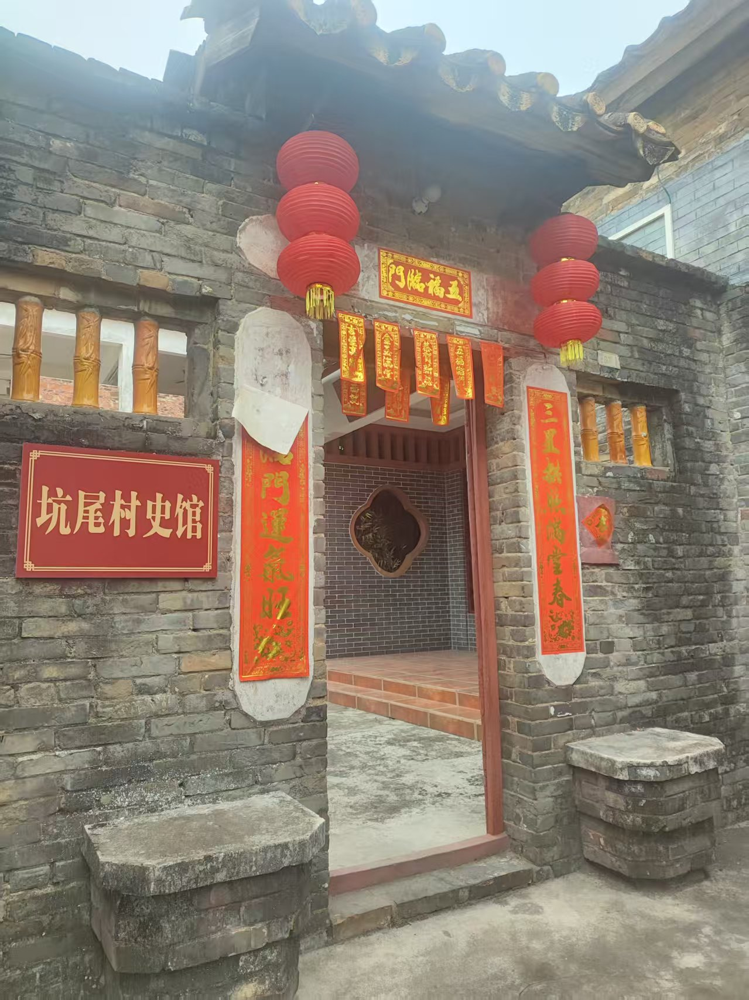
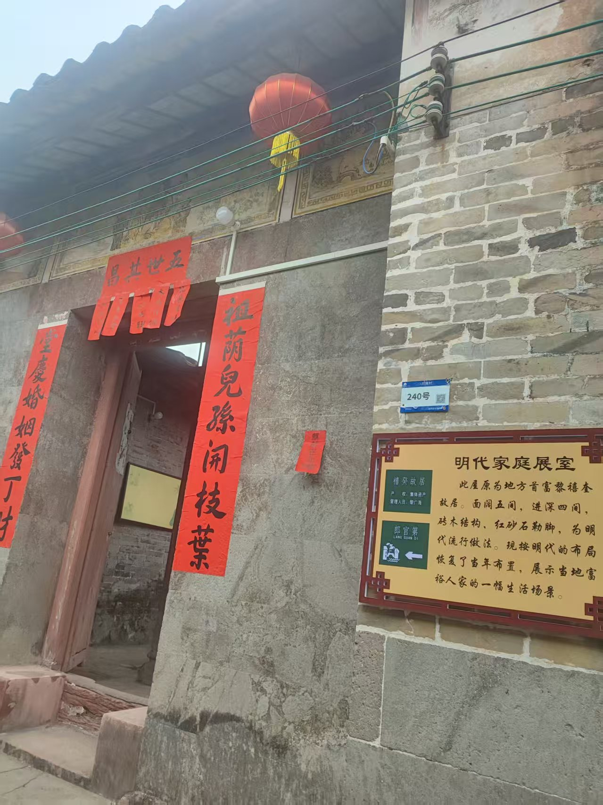
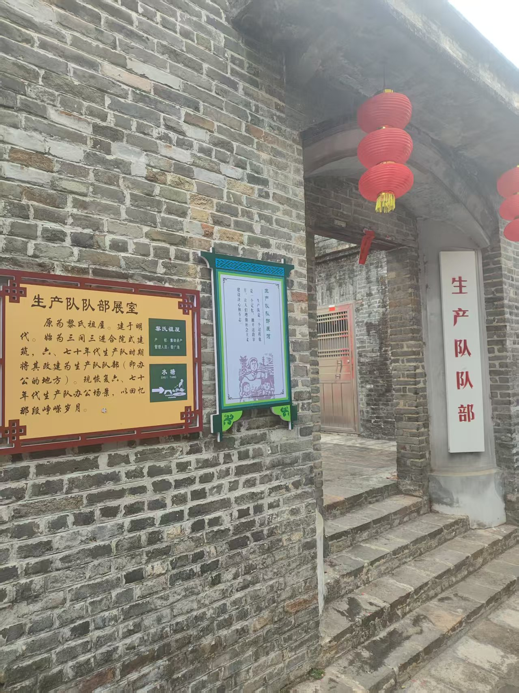
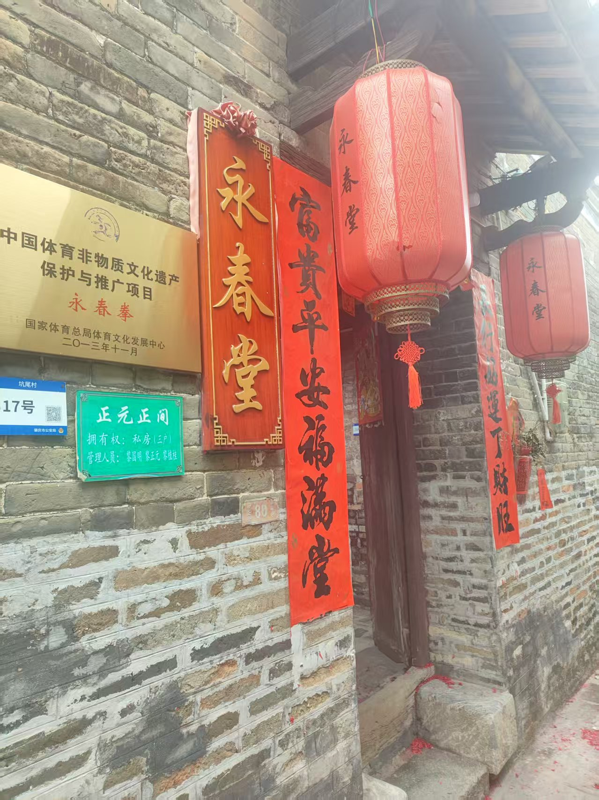

坑尾村史馆
白土镇百联社区坑尾村史馆位于广东省肇庆市端州区白土镇坑尾村，是一座以展示和传承坑尾村历史文化为主的地方性博物馆。史馆通过实物、图片和文字资料，生动地再现了坑尾村的历史沿革、民俗风情和文化特色。参观者可以在这里了解坑尾村的起源、发展以及村民的生产生活方式，感受浓厚的岭南文化氛围。史馆的建立，不仅丰富了当地的文化资源，也为研究和保护地方历史提供了重要的实物资料。

明代展厅
白土镇百联社区内设有明代家族展室，旨在展示和传承当地明代家族的历史文化。展室通过实物、图片和文字资料，生动再现了明代家族的起源、发展和文化特色。参观者可以在此了解当地明代家族的历史沿革、家风家训以及对社会的贡献，感受浓厚的岭南文化氛围。该展室的建立，不仅丰富了当地的文化资源，也为研究和保护地方历史提供了重要的实物资料。

生产队展馆
这是由白联社区居民亲手创建的生产队展馆，馆内展示了村民们多年来为国家建设作出的贡献，此外，还陈列着许多具有历史价值的农具和遗迹，生动地见证了当地的传统农业文化和历史变迁。

永春堂
这是由白联社区居民共同打造的传统武术传承堂馆，馆内展示了许多黎氏家族后裔在全球各地比赛的辉煌经历，展现了深厚的武术文化底蕴。该堂馆被誉为中国体育的非物质文化遗产，成为弘扬中国传统武术精神和技艺的重要载体。